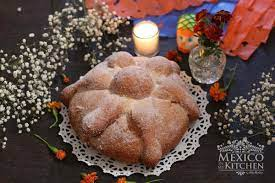

Here is a Mexican bread called Pan de Muertos, or bread of the dead in english
Ingredients
- 1/4 cup margarine
- 1/4 cup milk
- 1/4 cup warm water
- 3 cups all purpose flour
- 1 1/4 teaspoon active dry yeast
- 1/2 teaspoon salt
- 2 teaspoons anise seed
- 1/4 cup white sugar
- 2 eggs, beaten
- 2 teaspoons orange zest
- 1/4 cup orange juice
- 1 tablespoon orange zest
- 2 tablespoons white sugar
Directions
- Step 1Heat the milk and the butter together in a medium saucepan, until the butter melts. Remove from the heat and add them warm water. The mixture should be around 110 degrees F (43 degrees C).
- Step 2In a large bowl combine 1 cup of the flour, yeast, salt, anise seed and 1/4 cup of the sugar. Beat in the warm milk mixture then add the eggs and orange zest and beat until well combined. Stir in 1/2 cup of flour and continue adding more flour until the dough is soft.
- Step 3Turn the dough out onto a lightly floured surface and knead until smooth and elastic.
- Step 4Place the dough into a lightly greased bowl cover with plastic wrap and let rise in a warm place until doubled in size. This will take about 1 to 2 hours. Punch the dough down and shape it into a large round loaf with a round knob on top. Place dough onto a baking sheet, loosely cover with plastic wrap and let rise in a warm place for about 1 hour or until just about doubled in size.
- Step 5Bake in a preheated 350 degrees F (175 degrees C) oven for about 35 to 45 minutes. Remove from oven let cool slightly then brush with glaze.
- Step 6To make glaze: In a small saucepan combine the 1/4 cup sugar, orange juice and orange zest. Bring to a boil over medium heat and boil for 2 minutes. Brush over top of bread while still warm. Sprinkle glazed bread with white sugar.